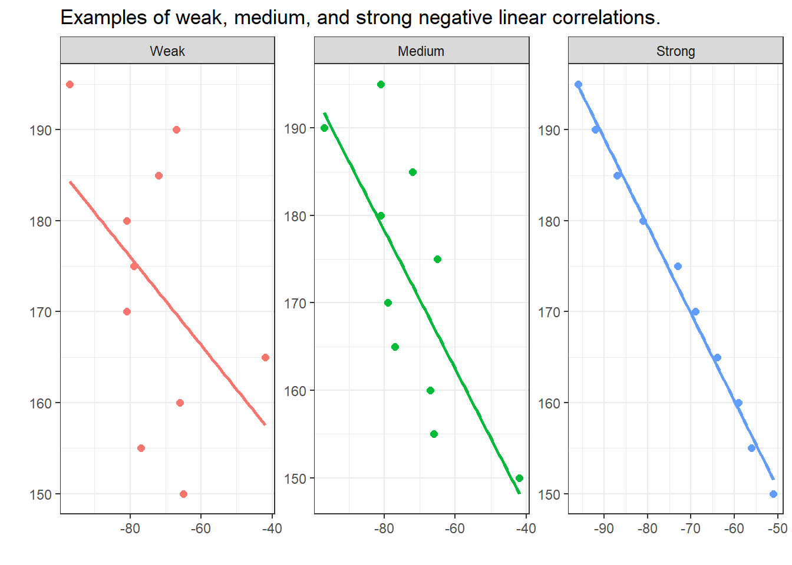
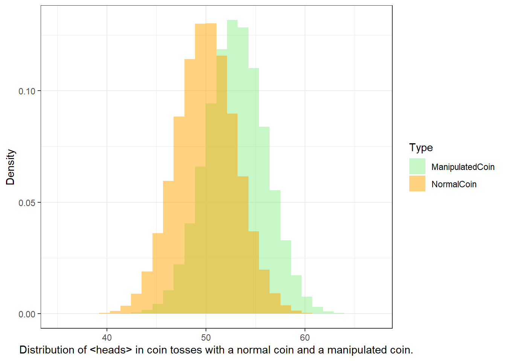
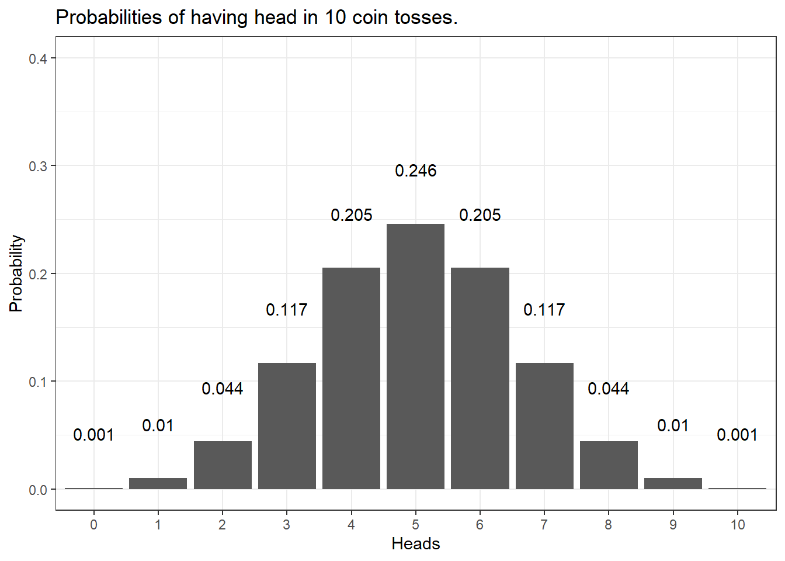
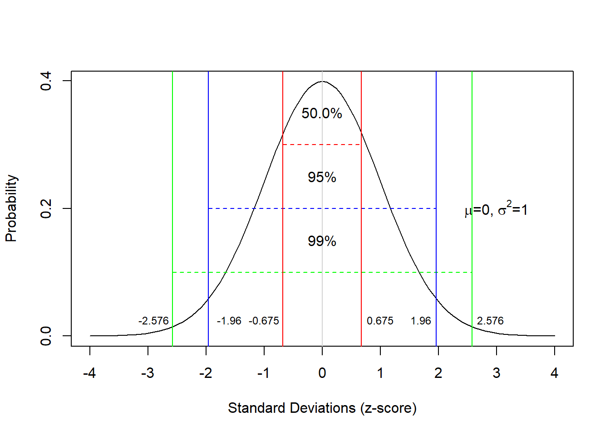
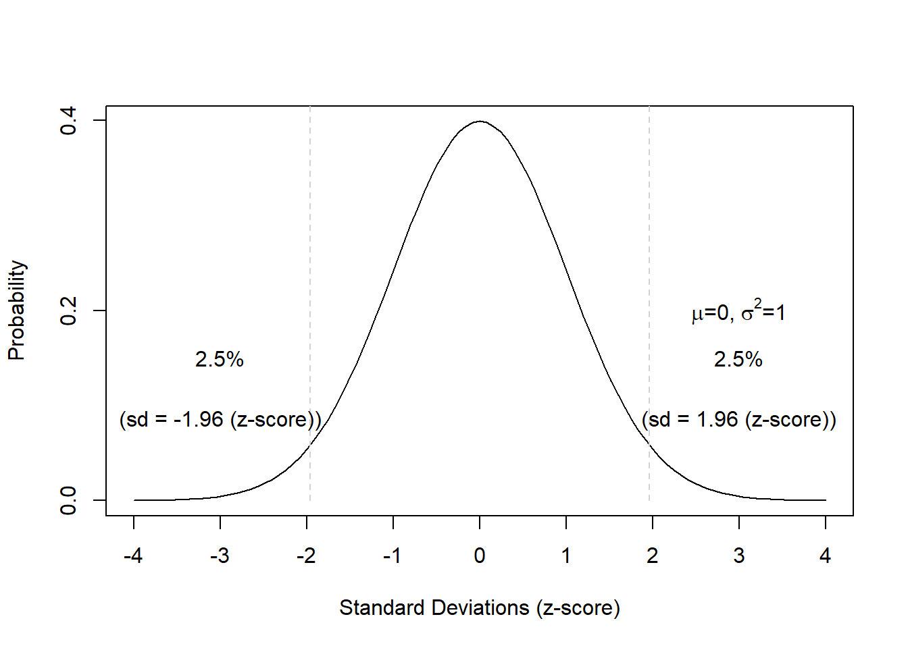
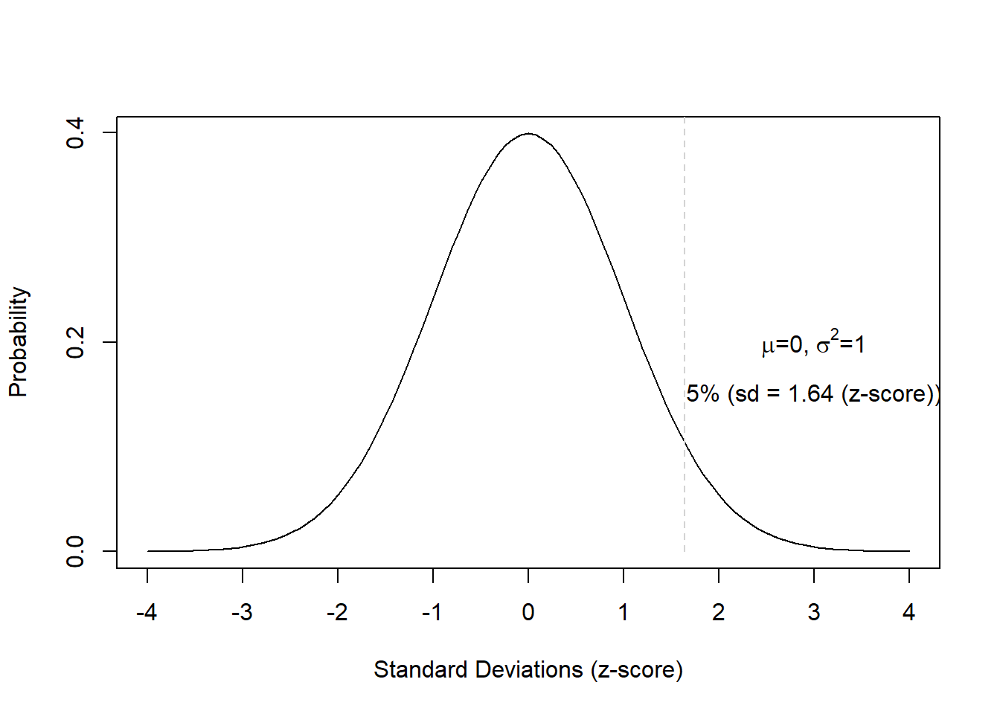
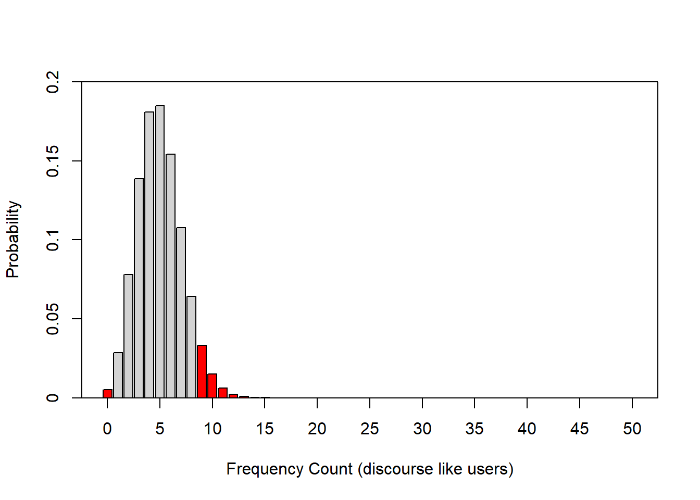
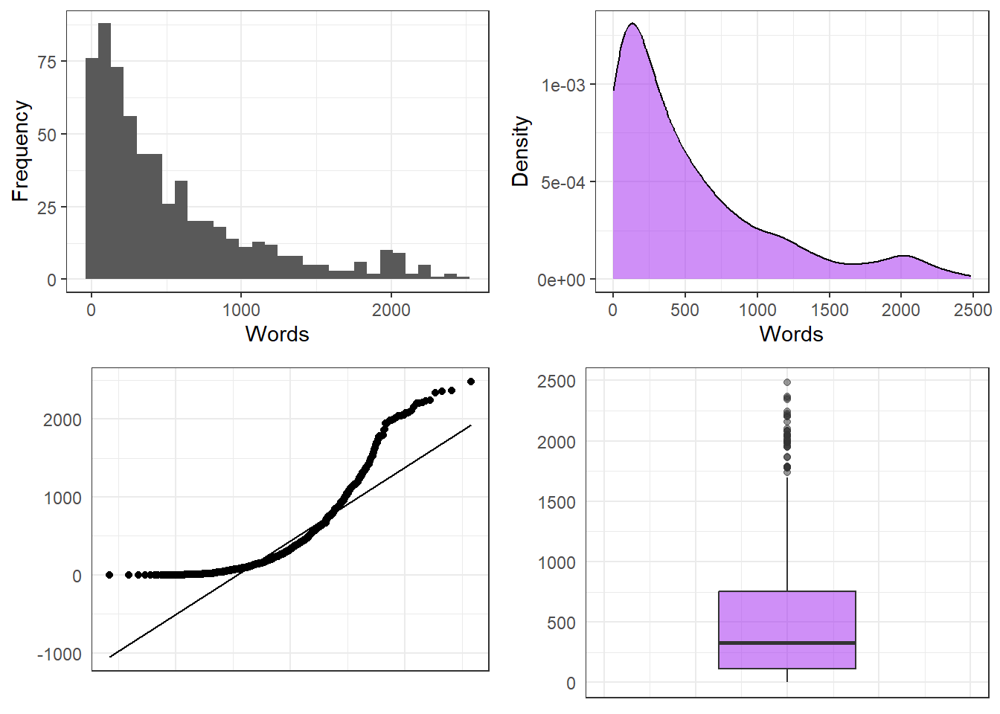
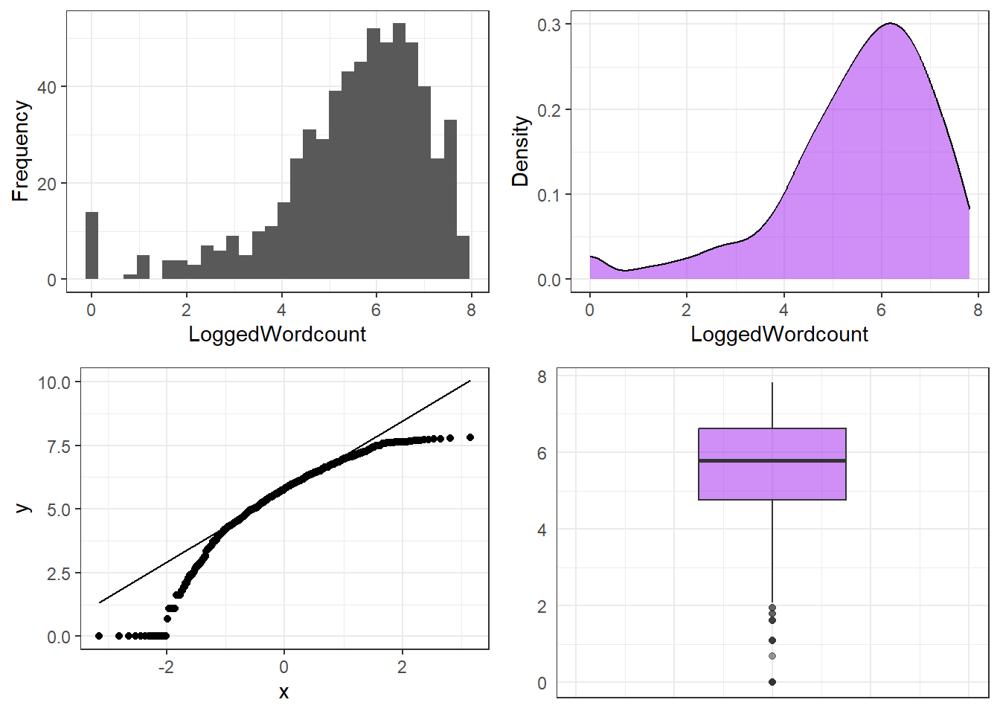
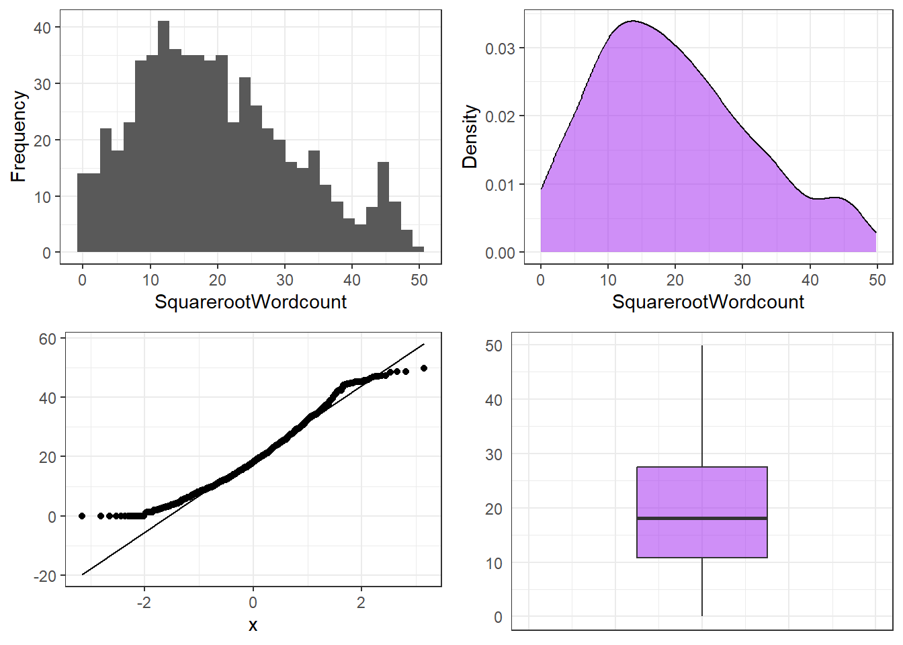

Basic Concepts in Quantitative Research
1 Introduction
Perhaps the most trivial and important issues related to the processing and analysis of data are the questions What is statistics? and Why should I use statistics?. A simple answer to the first question is that statistics is a way to find out about the world around us in quantitative terms. Statistics therefore comprises methods that perform quantitative analyses. Quantitative analyses use numeric information to understand the world and they are very important in science (which I take here to refer to any approach that uses the scientific method to gain a reliable understanding of the world around us). The answer to the second question is more complicated but we can say that we use statistics for three main purposes:
- to summarize data (descriptive statistics)
- to explore data, and (exploratory statistics)
- to see how something is related or influenced by something else. (inference statistics)
I also have a very practical approach to statistics and like to think of statistics as a kind of labor-saving device which helps me minimize labor - either the effort associated with reporting a result or in the effort of finding out about how two or more things are related based on some form of data. As such, statistics comprises methods (quantitative analyses) that we use in science to understand the world around us. Science can be defined as a systematic enterprise that builds and organizes knowledge in the form of testable explanations and predictions about the universe [1]. One of the most fundamental concepts in that definition is the concept of testable explanations. Another name for such explanations is hypothesis. Thus, Edward Wilson’s definition of science can be rephrased (somewhat crudely) as the methodological testing of hypotheses. This goes to show that hypotheses are at the very heart of the scientific endeavor.
To get a better understanding of how we do science, this tutorial introduces basic concepts that underpin (all) quantitative analyses. To this end, we will try to understand what hypotheses are, how to formulate them, and what logic underpins hypothesis testing. To begin with, we will focus on a practical example to avoid talking merely about abstract ideas. The example we will look at is the English comparative construction.
2 Primer: English Comparatives
In English, the comparative forms of adjectives can be formed according to two strategies: either synthetically (also called morphologically) as in (1) or analytically (also called periphrastically) as in (2).
As a general rule, the comparative of adjectives that have only one syllable are formed by using the morphological strategy while adjectives that have three or more syllables are formed using the periphrastic strategy. However, in some cases where adjectives consist of two syllables, speakers may choose which strategy they apply. In our example, we want to find out, how to proceed when trying to understand the reasons why a speakers chooses the first strategy in one case and the second strategy in another.
synthetic/morphological comparative
proud \(\rightarrow\) prouderanalytic/periphrastic comparative
proud \(\rightarrow\) more proud
To investigate this phenomenon more closely, we should first determine which variables or factors influence which comparative strategy a speaker uses. To answer which factors affect the comparative choice, we need to have a look at the respective literature. In the literature on the English comparative constructions the following influencing factors have been named:
Length of the adjective
Adjectives that consist of a single syllable tend to form the comparative form via the morphological strategy as in (3) while multi-syllabic adjectives tend to form the comparative via the periphrastic strategy as in (4).
synthetic/morphological comparative: cool \(\rightarrow\) cooler
analytic/periphrastic comparative: attractive \(\rightarrow\) more attractive
Syntactic Function
Adjectives in attributive position prefer the morphological strategy, while adjectives in predicative position prefer the the periphrastic strategy.
“The prouder boy of the two was smiling.”
“The boy to the left was more proud.”
Ending
Adjectives which end in –ly or -y prefer the morphological strategy.
Subsequent than
If a than follows the comparative, then the adjective prefers the morphological strategy as in (7).
- “This joke is funnier than the other one.”
It helps to create an overview table for the variables that have been shown in the literature to significantly affect the choice of the comparative strategy. Both better and worse examples of such overview tables are shown in [2]. To answer our example question, we have to define the variables in order to formulate a proper hypothesis in the next step.
An example for such a hypothesis would, for instance, be If an adjectives has only one syllable, then a typical native speaker will prefer the morphological variant. The next question then is how to test such a hypothesis and which concepts underlie hypothesis testing. And these questions and issues are addressed below.
3 Hypotheses
Probably the most important task in empirical research is hypothesis testing. A proper scientific hypothesis is commonly - but not necessarily - a general assumption in the form of a statement. Hypotheses are tested by comparing systematic observation with the predictions of the hypothesis. More specifically, in order to test hypothesis one seeks for observations which contradict and are at odds with the hypothesis. If we find such a counter example and we have determined that it is an accurate observation, then the hypothesis is falsified, i.e. is is not correct.
If we proposed the hypothesis Apples always fall down. and we find an example of an apple not falling down, then our hypothesis would be falsified.
EXERCISE TIME!
`
- Can you think of cases where apples do not fall down?
Answer
For example in space when there is no gravity or if another center of gravity were so close that it would pull the apple towards that more powerful center of gravity.- How would we have to modify our hypothesis to accommodate potential counter-examples?
Answer
Instead of saying Apples always fall down., you could say Apples always fall towards the dominant center of gravity.`
The fact that hypothesis must be falsifiable is a defining feature of hypotheses and it means that for a statement to be a hypothesis, it must be falsifiable (which does not mean that it must be false!).
The for trying to falsifying rather than proving or validating hypothesis, lies in the act that falsification is possible while providing proof for an empirical fact is impossible: If we make only one observation which refutes a hypothesis, the hypothesis is falsified. No matter how many evidence we have for that hypothesis, the hypothesis remains falsified. It is therefore impossible to prove an empirical hypothesis! There are, however, statements that cannot be disproved or falsified - either for technical reasons (1) or because they are subjective (2).
There are forms of life in the Andromeda galaxy.
I like chocolate ice cream better than vanilla ice cream.
Statements that cannot be falsified are called speculation. Speculation is nothing bad or something worthless - on the contrary! - but they simply fall outside of the realm of empirical science. Examples for the creativity and the usefulness of speculation are, for instance, art, literature, music, and philosophy.
Summing up, hypotheses can be defined as possessing at least four criteria:
Hypotheses are falsifiable statements about empirical reality.
Hypotheses are testable statements about the empirical world.
Hypotheses are unambiguous.
Hypotheses are inherently consistent.
Universality cannot be considered a defining feature of hypotheses, because it is - strictly speaking - not necessary. For instance, we could formulate the hypothesis that a certain archaeological model is correct, if we find certain artifacts at a specific place in a certain layer of earth. This hypothesis relates to a a very specific singular event but it would still be a falsifiable and testable statement (and thus a hypothesis).
EXERCISE TIME!
`
- Which of the following are hypotheses? Please provide reasons.
a. Smoking could have negative effects on one’s health.
b. Alcohol is a gateway drug.
c. If alcohol is a gateway drug, then it should be criminalized.
d. If alcohol is a gateway drug but tobacco is not, then a significantly higher proportion of drug addicts have consumed alcohol compared with the proportion of drug addicts who have smoked before taking drugs.
e. Alcohol is a gateway drug, when/if it is illegal.
f. Colorless green ideas sleep furiously.
g. Nightingales dream in Italian.
Answer
- no hypothesis (ambiguous because it contains a modal: could)
b. hypothesis (all criteria are met)
c. hypothesis (all criteria are met)
d. hypothesis (all criteria are met)
e. hypothesis (all criteria are met)
f. no hypothesis (not inherently consistent)
g. no hypothesis (not testable).
`
Types of Hypotheses
On a very fundamental level, we can differentiate between null-hypotheses (H\(_{0}\)), that claim non-existence of either a state of being or a difference, and alternative or test-hypothesis (H\(_{1}\)) that claim or postulate the existence of of either a state of being or a difference. Among test-hypotheses, we can furthermore distinguish between non-directed hypotheses which claim that one sample is different from another sample, and directed hypotheses which claim that a feature of one sample is bigger, smaller, more frequent, or less frequent, etc. Thus, a hypothesis that group A will perform better in an exam is a directed test-hypothesis while an non-directed hypothesis would merely claim that they differ in their test results. In contrast, the null-hypothesis would claim that there is no difference between the groups in terms of their performance in that exam.
An additional distinction among hypotheses is the difference between deterministic and probabilistic hypotheses. While we are dealing with a deterministic hypotheses in (10) because it is a categorical claim, we are dealing with a probabilistic hypothesis in (11) because, here, the hypothesis simply claims that the likelihood of Y is higher if X is the case (but not necessarily categorically).
If the length of two words in an English phrase is different, then the shorter word will always proceed the longer word.
If the length of two words in an English phrase is different, then it is more likely for the shorter word to proceed the longer word than vice versa.
Why test the H0?!
Although it is counter-intuitive, we do not actually test the test-hypothesis but we test the null-hypothesis. We will now have a closer look at how to formulate hypotheses and that formulating hypotheses is formulating expected outcomes/explanations in a formal description.
Null hypothesis (H0) Groups A and B do not differ systematically! (\(\mu\)A = \(\mu\)B)
Test hypothesis (H\(_{1a}\)) Groups A and B differ systematically! (\(\mu\)A \(\neq\) \(\mu\)B; non-directed)
Test hypothesis (H\(_{1b}\)) Group A has significantly better results/higher levels of x compared with group B. (\(\mu\)A \(>\) \(\mu\)B; directed)
What does that mean and what are we testing? In non-technical terms, we test how likely it is that the results came about by accident. If the probability is high (p > .05) that the results happen to be random, then we do not discard the H0. If the likelihood is low (p < .05) that the results came about randomly, then we discard the H0 and assume the H1 instead! To better understand this logic, we will discuss probabilities and their role in quantitative research.
EXERCISE TIME!
`
- What four characteristics do hypotheses have?
Answer
They are are falsifiable (either true or false), they are testable, they are unambiguous, and they are inherently consistent (logically coherent).- Come up with (a) three directed hypotheses and (b) three non-directed hypotheses.
Answer (examples)
Directed
In a 100 meter dash, Martin runs faster than Jack.
In informal conversations, Martin uses fewer swearwords than Michael.
Per minute, Martin can produce more words than Erich.
Non-directed
Martin and Michael differ in their use of swear words.
Martin and Erich differ in their speech speed.
Stefan and Martin differ in their need for sleep.
Oftentimes, it is not that easy to differentiate between hypotheses and other types of statements. Find a partner and come with statements that are not hypotheses and discuss why these statements are not hypotheses.
Find a partner and come up with statements that can be classified as both hypotheses and non-hypotheses and be prepared to explain your reasoning to the group.
`
4 Data and Research Designs
In the previous section, we have dealt with hypotheses and in this section, we want to focus on how we can test hypotheses. To this end, we will focus on data and different research designs.
Before we turn to different designs that are used to test hypotheses, however, let us briefly talk about the terms sample and population as this will be important to our discussion of how we can test hypotheses. A sample is a selection from a population that should reflect the features of the population one is interested in. We speak of a population instead of the population, because there are many different populations and we need to be very conscious about what population we are able to infer something about. For example, if the sample includes only Germans between 20 and 30, then the population the sample is drawn from is not the totality of all Germans, but only the population of Germans between 20 and 30 at this point in time. Of course, this is very simplistic, as other factors are ignored in this example.
Research Designs
Now that the terms sample and population are clear, we can continue to think about how we could test hypotheses. In the empirical sciences, we try to answer questions we have by analyzing data. However, before we can attempt to answer a question and test if we are right with the answer we have in mind (our hypothesis), we have to decide on how to tackle the question. Thus, we have to come up with a plan about how to test our hypothesis. This plan is called a research design. The research design informs how to collect, process, visualize, and analyze the data. As such, the research design focuses on all aspects of research that are related to the data.
Thus, after comping up with a research question and a hypothesis, the next step typically consists in collecting the right type of data. There are different ways to collecting data and these different ways to collect data represent different research designs. We cannot go over all the different designs (and they can be combined, for instance, introspection is often a part of questionnaire designs), but we will focus and briefly discuss the most common ones.
In general, we can distinguish between experimental and observational designs. In contrast to observational designs (which can only confirm correlations, i.e. that X and Y occur together), experimental designs are more powerful in that they can determine causality (i.e., if X causes Y). We the most common research designs in the language sciences are
- experimental
- experimental designs (e.g., reaction times, eye-tracking)
- observational
- behavioral designs (e.g., corpora)
- archival/reviews (e.g., grammars, systematic literature reviews)
- introspection (e.g., grammaticality judgements)
- questionnaire designs (e.g., elicitation via surveys and questionnaires)
There are more designs(e.g. meta-studies) and also other classifications, but in the language sciences, I think that the ones listed above are the most frequent ones. Each of these designs has advantages and disadvantages which are briefly summarized in the table below.
install.packages("e1071")
install.packages("flextable")
install.packages("ggplot2")
install.packages("ggpubr")
install.packages("graphics")
install.packages("grDevices")
install.packages("knitr")
install.packages("tidyverse")Type | Research design | Example | Directness of access to phenomenon | Cost/Labor intensity | External validity (generalizability) | Internal validity | Ease of data collection (e.g. access to participants) |
Experimental research | Experimental | Reaction time measurements | high/variable | high/variable | low/variable | high | low |
Observational research | Behavioral | Corpus study | high | low/variable | high | high | medium |
Archival/Review | Systematic literature review | low | low | low | medium | high | |
Introspection | Grammaticality judgements | high | low | low/variable | high | low | |
Questionnaire | Language use survey | medium | low | medium | medium | high |
We will now briefly focus on each design and discuss it.
Experimental research
Experimental designs can determine if there is a causal link between predictors and response which sets experimental designs apart from observational designs. Experiments typically take place in very well-controlled, but unnatural environments, .e.g, in laboratories.
In experimental designs, subjects are typically randomly assigned into test groups and control groups and the experimenter. If the subjects are not assigned randomly to test and control groups, the design is referred to as quasi-experimental (while experimental designs with randomized allocation of subjects are referred to as true experiments). The aim of experiments, in the most basic sense, is to determine if a result differs based on a change in some condition. The experimenter would change the condition only in the test group while not changing it in the control group while everything else remains constant. That way, it is possible to test if the change in the condition is responsible for the change in the outcome.
During an experiment, subjects are shown stimuli (e.g., sentences, words, pictures) and the subjects (should) react to those stimuli showing a response (pressing buttons, providing judgments). The response does not have to be voluntary, meaning that responses can also simply be neuronal activity that the subject has no control over. In repeated measure designs, the same subjects are tested repeatedly while different subjects are tested in between-subjects designs.
In addition to the ability to establish causality, experimental designs allow a very direct access to a phenomenon and have high internal validity which means that experiments can test the phenomena in a very well-circumscribed and precise manner. Disadvantages of experimental designs are that they are typically rather costly and labor intensive and that the results are not necessarily generalizable due to the un-natural setting of most experiments (low external validity).
Quasi-experimental research
In contract to experimental designs, subjects (or participants) in quasi-experimental designs are not randomly assigned to groups. Because of this, quasi-experimental designs can be affected by confounding (i.e., that changes in the dependent variable are caused by a variable that is not controlled for). As such, quasi-experimental designs are not experimental designs but can be considered observational. Examples for quasi-experimental designs are corpus-based variationist studies of the occurrence of linguistics variants in a variable context.
Quasi-experimental designs encompass studies where subjects cannot be randomly assigned into test groups because either, this is not practically possible because the observation has already taken place or because the characteristic is inherent in the participants themselves. For instance, analyses of historical data can at best be quasi-experimental because the data have already been collected and the experimenter cannot assign participants to test groups. Also, some studies that analyze sex differences via the behavior of men and women cannot be experimental because participants cannot be randomly assigned to the male or female group.
Observational designs
In the language sciences, observational designs encompass all forms of data acquisition and collection where the subjects are observed in their “natural habitat”. Hence, observational or behavioral designs are the most natural and thus have high external validity which means that we can assume that the results are transferable to the real world. The most common type of this design are corpus studies in which texts (which encompasses both written and transcribed spoken language) are searched for the occurrence of certain linguistic patterns and then correlated with some other feature, the use of a certain linguistic construction such as a specific suffix or a fixed expression like in order that in two different time periods or dialects.
The cost and labor intensity of corpus studies depends heavily upon if the corpus that you want to use has already been compiled - if the corpus is already available, the the costs and labor intensity are minimal but they can be high if the corpus has to be compiled first. However, even compiling a corpus can be comparatively easy and cheap, for example, if you compile a corpus consisting of a collection of texts that are available online but the costs can be substantive if you, for example, first need to record and transcribe spoken language in the field).
The problem with observational designs are that the contexts in which the data were collected were not controlled with means that the results are more likely to be affected by contextual or confounding factors that the researchers have no control over or don’t even know about.
Archival research and reviews
Archival research is more common in historical linguistics where researchers look for primary texts or records in archives. However, archival research also encompasses digital archives such as libraries which means that systematic literature reviews also fall under this research design.
The advantages of archival research designs are that the data collections is typically comparatively easy and associated with minimal costs. Also, depending on the phenomenon, the access to the phenomenon can be quite indirect, for example, entirely filtered through the eyes of eye witnesses or experts.
Introspection
Introspection has been the dominant form of “data collection” in the 20^th century and it is strongly connected to what is called armchair linguistics (linguists coming to insights about language by musing about what they can or would say and what they could or would not say). Introspection is, of course, by far the easiest and cheapest way to “collect data”. Unfortunately, introspection is subjective and can be heavily biased by the expectations and theoretical framework of subjects. Nonetheless, introspection can be and is extremely useful in particular regarding hypothesis generation and finding potential predictors for a certain linguistic behavior that can then be tested empirically.
Since the 1990s and the rise of empirical linguistics, which is characterized by the employment of both experimental designs as well as corpus linguistics and increased use of questionnaire designs, introspection has been relegated to playing a part of other designs while only rarely being used as the sole source of data collection.
Questionnaire designs
Questionnaire designs represent any method of data collection where respondents are asked to provide (conscious) information to answers or ratings/evaluations to prompts (such as statements). The process to ask for information from respondents is called elicitation.
In addition to surveys which ask for socio-demographic information about speakers or about language use and language background information, questionnaires frequently ask respondents to rate their agreement with items, or the likelihood, frequency, or acceptability of items on Likert scales. A Likert scale, pronounced /lick.ert/ and named after the psychologist Rensis Likert, and often ranges from strongly disagree to strongly agree (or analogously from never to very frequently or extremely unlikely to extremely likely). Typically, respondents are given 5 or 7 options with the endpoints noted above representing the endpoints and respondents are asked to select the options that best matches their evaluation.
A type of elicitation that is special in the language science is called discourse completion task or DCT. In DCTs, respondents are asked to imagine a certain discourse context or situation and are then asked how they would answer, respond, or express something. While DCTs have been shown to provide data that mirrors real-world behaviors, it is less reliable compared to corpus data as respondents cannot necessarily provide accurate information about their linguistic behavior.
To counter fatigue effects (respondents get tired or annoyed and do no longer answer to the best of their knowledge/ability), questionnaire items are often randomized so that their order differs between respondents. To counter what is called agreeability effects, researchers commonly have respondents rate test items (items that contain the phenomenon researchers are interested in) and fillers (items that do not contain what researchers are interested in). Fillers are included to disguise what the questionnaire aim to test so that respondents cannot (unconsciously) try to provide agreeable answers (the answers that researchers hope to get).
5 Variables and Validity
A statistical variable is a characteristic that can take on a specific form. A variable, in contrast to the constant, can take on at least two different stages or levels. The variables in your hypothesis must be operationalized, i.e., you need to determine what exactly needs to be investigated, what counts, what is measured. In other words, operationalization is the measurement of a variable. If possible, a variable should be operationalized so that its measurement is as good as possible reflects the underlying concept.
The correspondence between the concept and the variable that operationalizes the concept is referred to as intrinsic validity. An example of intrinsic validity would be, for example, an operationalization of linguistic complexity that reproduces them well measurable (for example, number of morphemes in a phrase, number of syntactic nodes, or similar).
The counterpart, external validity, denotes the applicability of the insights gained, for example, from an experimental investigation to the real empirical world. For instance, one could experimentally investigate which methods lead to better recall of nonsense-syllables (syllables not occurring in the speakers’ natural L1) but this would not necessarily allow us to generalize these finding to the “real” world. External validity in this context would mean that the findings can also be transferred to other real-world memory tasks, such as vocabulary learning.
There are two types of variables, dependent and independent. The independent variable(s) represents the predictor(s). In research, we typically want to investigate how predictors (independent variables) affect and outcome or result (the dependent variable). In experiments, the independent variable(s) are manipulated to investigate its influence on the dependent variable. Let us take the example of a medical study to illustrate this: in a typical medical study, the influence of a particular drug (independent variable) on the presence of symptoms (dependent variable) is measured.
It is extremely important to know the type of variable, as this has a direct impact on what statistical analysis is possible for the data at hand. We will therefore discuss various types of variables and their properties below.
Variable Types (Scaling)
In the following, variable types (also referred to as scaling level or scaling) are discussed. It is very important to know which type of variables one is dealing with because the type of variable has affects many of the methods discussed, both in descriptive and in inferential statistics.
Nominal and Categorical Variables
Nominal and categorical variables only list the membership of a particular class. For nominal variables, there are exactly two occurrences (yes/no or on/off), while for categorical variables there can be several groups, e.g. the state in which someone was born.
Ordinal Variables
With ordinal variables it is possible to rank the values, but the distances between the ranks can not be exactly quantified. An example of an ordinal variable is the ranking in a 100-meter dash. The 2nd in a 100-meter dash did not go twice as fast as the 4th. It is often the case that ordinal variables consist of integer, positive numbers (1, 2, 3, 4, etc.).
(True) Numeric Variables
There are two basic types of numeric variables: interval-scaled variables and ratio-scaled variables. For interval scaled variables, the differences between levels are significant, but not the relationship between levels. For instance, 20 degree Celsius is not twice as hot as 10 degree Celsius.
With respect to ratio-scaled variables, both the differences and the relationship between the levels are significant. An example of this is the times in a 100-meter dash. For ratio-scaled variables, 10 is exactly twice as high as 5 and half as much as 20.
It is very important to keep in mind that both interval-scaled variables and ratio-scaled variables are numeric variables. This will play a role later because many tests can either only or never be applied to numeric variables.
Variable Type | Variable Level |
Nominal Scaled / Categorical Variables | Gender, Nationality, Part of Speech |
Ordinal Scaled Variables | Graduation, School Grades, Military Rank |
Interval Scaled Variables | Temperature, Acceptability Judgments |
Ratio-scaled Variables | Age, Duration, Number of Syllables |
It is enormously important to know variable types and levels, as the type of variable requires which tests are possible and which are not. For example, a \(\chi\)2-test can only be applied to nominal or categorical variables, and a t-test to numeric variables only.
It is often necessary to translate variables into another type of variable. It should be noted that variables can only be transferred to variable types with less information content. The least informative variables are nominal, while the most informative variables are ratio scaled. The variable types thus form an implicit hierarchy:
nominal/categorical < ordinal < interval/ratio
Here is an example to illustrate this: let’s say you are investigating gender differences in the use of swear words in spoken Irish English and you find that you cannot use a linear regression or an ANOVA because too many speakers use no swear words (which violates the requirement that the errors must be normally distributed). In such a case, what one can do is to rank the speakers by their frequency of swear or curse words. Rank 1 would represent the speaker with the highest frequency of swear words, rank 2 would represent the speaker with the second highest frequency of swear words and so on. After you do this, you can, for example, use a Mann-Whitney U test to determine the relationship between the gender of speakers and their swear word ranking. You could also split the speakers into two groups (swear word users and non-swear-word users) and then perform a \(\chi\)2-test of the frequencies of men and women in these groups. The important thing is that you cannot transform a categorical variable into a numeric variable as this would mean that you transform a less information-rich variable into a more information-rich variable.
EXERCISE TIME!
`
- For each of the variables listed below, consider how you could operationalize them and what kind of variables it would be.
a. weather (cloudy, sunny, rainy, etc.)
b. citizenship
c. Tense of matrix verbs
d. Structural complexity
e. word length
f. Number of syllables in a word
g. The length of pauses in a sample of conversations
h. The appearance or non-appearance of finite verbs in a particular text
i. Estimation of words on an acceptability scale from 1 to 5
Answer (examples)
There are other solutions so the following are just possible options!
a. weather could, e.g., be operationalized as the number of sunny days or the amount of rain per year. Optimally, we would want weather to be operationalized as a numeric variable.
b).citizenship would typically be operationalized as a categorical variable (e.g. German or Norwegian or Australian or other).
c. This answer depends on the grammatical structure of the language in question. In English, we would probably operationalize the tense of matrix verbs as a nominal variable with the levels present and non-present.
d. Structural complexity can be operationalized in many different ways, e.g., as the number of syntactic nodes, sentence length, number of phrases, average phrase length, etc. Optimally, we would want structural complexity to be operationalized as a numeric variable.
e. Word length could,e.g. be operationalized as number of letters, number of phonemes, or the time it takes to produce that word. Thus, word length would typically be operationalized as a numerically scaled variable or an integer (which, in R, would be a type of numeric variable).
f. The number of syllables per word would be operationalized as an integer (which, in R, would be a type of numeric variable).
g. The length of pauses in a sample of conversations could be operationalized as the time of the pause (numeric) or even just as an ordered factor (short, middle, long). Optimally, however, we would want the length of pauses to be operationalized as a numeric variable.
h. The appearance or non-appearance of finite verbs in a particular text would be a nominal variable (present versus absent).
i. (The estimation of words on an acceptability scale from 1 to 5 represents judgements on a Likert scale which means that the resulting variable would represent an order factor (ordinal variable).
As you have seen from the above exercise, concepts can be operationalized differently. Find a partner and imagine that you are tasked with performing a study in which age of subjects is an important variable. Discuss with a partner how you would age. What advantages and disadvantages do the different operationalizations have?
Example: When it rains, more people get wet than when it’s not raining. (If X, then Y)
What is the dependent variable here and what is the independent variable?
Answer
Dependent variable: wet people
Independent variable: rain
- Which variable scales are time, rank, and name in the table below?
Name | Rank | Time |
Carl Lewis | 1 | 9.86 |
Ben Johnson | 2 | 9.97 |
Steve Davis | 3 | 10.06 |
Answer
Name is categorical, Rank is ordinal, and Time is numeric.
Discuss with a partner: what obstacles might exist, so that a well operationalized variable has low extrinsic validity?
Consider the following scenario: in a large representative study, shoe size is found to be an excellent predictor of intelligence. Given this result, find a partner and discuss if intrinsic validity is necessary?
`
6 Relationsships between variables
Most research aims to understand how something (or many things) influence something else. This means that research is interested in the relationships between variables. In statistics, a relationship between variables is commonly referred to as correlation. There are different types of relationships (correlations) and they can be classified along several dimensions:
strength: how strong is the relationship between the variables?
direction: is the relationship positive or negative?
linearity: is the relationship steady?
homogeneity: is the relationship consistent?
The visualizations below show linear positive correlations of varying strength. The strength of a correlation (relationship) represents how well one variable explains variability in the other variable: the better a variable explains the variability of another variable, the stronger the correlation between the two variables. In the visualizations below, we can see that the variability or dispersion in substantively more pronounced in the plot showing a weak correlation (indicated by the distances between the data points and the regression line) compared to the visualization that depicts a strong correlation (where the data points are very close to the regression line).

In contrast to the positive linear correlations depicted above, where the variables have a the higher the values of x, the higher the values of y correspondence, negative correlations have a the higher the values of x, the lower the values of y correspondence. The strength of the correlations is, however, not affected by its direction.

7 Significance and Probability
Hypothesis testing fundamentally builds on probabilities - or more precisely probabilities of error which is an estimation for the likelihood of the H0 being true given the data. In other words, we are interested in how likely the null hypothesis (H0) is. If the null hypothesis (H0) is very unlikely, for instance lower than 5 percent, we can assume that the null hypothesis is not true and thus reject it and instead assume that our test hypothesis (H1) is correct.
This type of probability, the probability ( the probability that the null hypothesis is true) is typically provided in the form of p-values. In a more prosaic (and also coarse-grained, imprecise manner), p-values are an estimate of how likely an outcome is a result of chance. We will delve a little deeper into probabilities and how they relate to hypothesis testing below.
Significance Levels
Before conducting a study, it is advisable to determine the so-called significance level or \(\alpha\) level. This \(\alpha\) level or level of significance indicates how high the p-value can be without having to assume that there is a significant relationship between the variables. It is customary to differentiate between three levels of significance (also called \(\alpha\) levels):
p < .001: highly significant - indicated by three stars (***)
p < .01: very significant - indicated by two stars (**)
p < .05: significant - indicated by one star (*)
Variables with a p value that is smaller than .1 but larger than .05 are sometimes referred to as being marginally significant (+).
Variables that are not significant are commonly referred to or labeled as n.s. (not significant). As we stated above, before we perform a test, we determine a value above which we reject the null hypothesis, the so-called significance level. It’s usually 5%. If the error probability is less than 5% (p <. 05), we reject the null hypothesis. Conclusion: The relationship between the variables is statistically significant. It is important to note here that the H1 (or Test Hypothesis) is correct only because the null hypothesis can be rejected! Statistics can NEVER prove hypotheses but only reject Null Hypotheses which leads us to accept the H1 as preliminary accepted or not-yet-rejected. So all knowledge is preliminary in the empirical sciences.
Probability
In the following, we will turn to probability and try to understand why probability is relevant for testing hypotheses. This is important at this point because statistics, and thus hypothesis testing, fundamentally builds upon probabilities and probability distributions. In order to understand how probability works, we will investigate what happens when we flip a coin. The first question that we will be addressing is “What is the probability of getting three Heads when flipping a coin three times?”.
The probability of getting three heads when flipping a coin three times is .5 to the power of 3: .53 = .5 times .5 times .5 = .125. The probability of getting Heads twice when flipping the coin three times is .375. How do we know?
The probability of getting 3 heads in tree tosses is 12.5 percent:
.53 = .5 * .5 * .5 = .125
The probability of getting 2 heads in tree tosses is 37.5 percent:
.125 + .125 + .125 = 0.375
But how do we know this? Well, have look at the table below.
Toss 1 | Toss 2 | Toss 3 | Heads | Tails | Probabilty |
Head | Head | Head | 3 | 0 | 0.125 |
Head | Head | Tails | 2 | 1 | 0.125 |
Head | Tails | Head | 2 | 1 | 0.125 |
Tails | Head | Head | 2 | 1 | 0.125 |
Head | Tails | Tails | 1 | 2 | 0.125 |
Tails | Head | Tails | 1 | 2 | 0.125 |
Tails | Tails | Head | 1 | 2 | 0.125 |
Tails | Tails | Tails | 0 | 3 | 0.125 |
Given this table, we are in fact, in a position to calculate the probability of getting 100 heads in 100 coin tosses because we can simply fill in the numbers in the formulas used above: .5100 = 7.888609 * 10-31
Okay, let us make a bet..
If head shows, I win a dollar.
If tails shows, you win a dollar.
But given that you know I am cheeky bastard, you do not trust me and claim that I will cheat. But how will you know that I cheat? At which point can you claim that the result is so unlikely that you are (scientifically backed) allowed to claim that I cheat and have manipulated the coin?

So before we actually start with the coin tossing, you operationalize your hypothesis:
H0: The author (Martin) is not cheating (heads shows just as often as tails).
H1: The author (Martin) is cheating (heads shows so often that the probability of the author not cheating is lower than 5 percent)
We now toss the coin and head shows twice. The question now is whether head showing twice is lower than 5 percent.
We toss the coin 3 times. Head shows twice. How likely is it that I do not cheat and head falls more than twice anyway? (In other words, what is the probability p that I win twice or more and not cheat?) If you set the significance level at .05, could you then accuse me of being a cheater?
As you can see in the fourth column, there are three options that lead to heads showing twice (rows 2, 3, and 4). If we add these up (0.125 + 0.125 + 0.125 = 0.375). Also, we need to add the case where head shows 3 times which is another .125 (0.375 + 0.125 = .5), then we find out that the probability of heads showing at least twice in three coin tosses is 50 percent and thus 10 times more than the 5-percent threshold that we set initially. Therefore, you cannot claim that I cheated.
0 Heads | 1 Head | 2 Heads | 3 Heads |
0.125 | 0.375 | 0.375 | 0.125 |
We can do the same and check the probabilities of having heads in 10 coin tosses - if we plot the resulting probabilities, we get the bar plot shown below.

The distribution looks more bell-shaped with very low probabilities of getting 0 or 1 as well as 9 or 10 times heads in the 10 coin tosses and a maximum at 5 times heads in 10 coin tosses. In fact, the probability of having 0 and 10 times head is .001 (or 1 in a 1000 attempts - one attempt is tossing a coin 10 times) - the probability of having heads once and 9 times is.01 or 1 in 100 attempts. In contrast, the probability of having 5 times head is .246 or about 25% (1 in 4 attempts will have 5 heads). Also, we can sum up probabilities: the probability of getting 8 or more heads in 10 coin tosses is the probability of getting 8, 9, and 10 times heads (.044 + .010 + 0.001 = .055 = 5.5 percent).
Calculating the probabilities for three or even 10 coin tosses is still manageable manually but is there an easier way to calculate probabilities? A handier way is have a computer calculate probabilities and the code below shows how to do that in R - a very powerful and flexible programming environment that has been designed for quantitative analysis (but R can, in fact, do much more - this website, for instance, is programmed in R).
The code chunk below calculates the probabilities of having 0, 1, 2, and 3 times head in 3 tosses.
# probabilities of 0, 1, 2 and 3 times head in 3 coin tosses
dbinom(0:3, 3, 0.5)[1] 0.125 0.375 0.375 0.125The code chunk below calculates the probabilities of having 2 or 3 times head in 3 tosses.
# probabilities of 2 or 3 times head in 3 coin tosses
sum(dbinom(2:3, 3, 0.5))[1] 0.5The code chunk below calculates the probabilities of having 100 head in 100 tosses.
# probability of 100 times head in 100 coin tosses
dbinom(100, 100, 0.5)[1] 7.888609e-31The code chunk below calculates the probabilities of having 58 or more times head in 100 tosses.
# probability of 58 to a 100 times head in 100 coin tosses
sum(dbinom(58:100, 100, 0.5))[1] 0.06660531The code chunk below calculates the probabilities of having 59 or more times head in 100 tosses.
# probability of 59 to a 100 times head in 100 coin tosses
sum(dbinom(59:100, 100, 0.5))[1] 0.04431304The code chunk below calculates the number of heads in 100 tosses where the probability of getting that number of heads or more sums up to 5 percent (0.05).
# at which point does the probability of getting head
# dip below 5 percent in 100 coin tosses?
qbinom(0.05, 100, 0.5, lower.tail=FALSE)[1] 58Let’s go back to our example scenario. In our example scenario, we are dealing with a directed hypothesis and not with an un-directed/non-directed hypothesis because we claimed in our H1 that I was cheating and would get more heads than would be expected by chance (\(\mu_{Martin}\) \(>\) \(\mu_{NormalCoin}\)). For this reason, the test we use is one-tailed. When dealing with un-directed hypotheses, you simply claim that the outcome is either higher or lower - in other words the test is two-tailed as you do not know in which direction the effect will manifest itself.
To understand this a more thoroughly, we will consider tossing a coin not merely 3 but 100 times. The Figure below shows the probabilities for the number of heads showing when we toss a coin 100 from 0 occurrences to 100 occurrences.
The next figure shows at which number of heads the cumulative probabilities dip below 5 percent for two-tailed hypotheses. According to the graph, if head shows up to 40 or more often than 60 times, the cumulative probability dips below 5 percent. Applied to our initial bet, you could thus claim that I cheated if head shows less than 41 times or more than 60 times (if out hypothesis were two-tailed - which it is not).
The Figure below shows at which point the probability of heads showing dips below 5 percent for one-tailed hypotheses. Thus, according to the figure below, if we toss a coin 100 times and head shows 59 or more often, then you are justified in claiming that I cheated.
When comparing the two figures above, it is notable that the number at which you can claim I cheated differs according to whether the H1 as one- or two-tailed. When formulating a one-tailed hypothesis, then the number is lower compared with the the number at which you can reject the H0 if your H1 is two-tailed. This is actually the reason for why it is preferable to formulate more precise, one-tailed hypotheses (because then, it is easier for the data to be sufficient to reject the H0).
The Normal Distribution
It is important to note here that the above described calculation of probabilities does not work for numeric variables that are interval-scaled. The reason for this is that it is not possible to calculate the probabilities for all possible outcomes of a reaction time experiment (where time is a continuous variable). In such cases, we rely on distributions in order to determine how likely or probable a certain outcome is.
When relying on distributions, we determine whether a certain value falls within or outside of the area of a distribution that accounts for 5 percent of the entire area of the distribution - if it falls within the area that accounts for less than 5 percent of the total area, then the result is called statistically significant (see the normal distribution below) because the outcome is very unlikely.
The normal distribution (or Gaussian curve or Gaussian distribution) shown in the figure above has certain characteristics that can be derived mathematically. Some of these characteristics relate to the area of certain sections of that distribution. More generally, the normal distribution is a symmetric, bell-shaped probability distribution, used as the theoretical model for the distribution of physical and psychological variables. In fact, many variables in the real world are normally distributed: shoe sizes, IQs, sleep lengths, and many , many more.
The normal distribution is very important because it underlies many statistical procedures in one form or another. The normal distribution is a symmetrical, continuous distribution where
- the arithmetic mean, the median, and the mode are identical and have a value of 0 (and are thus identical);
- 50% of the area under the bell-shaped curve are smaller than the mean;
- 50% of the area under the bell-shaped curve are bigger than the mean;
- 50% of the area under the bell-shaped curve are within -0.675 and +0.675 standard deviations from the mean (0);
- 95% of the area under the bell-shaped curve are within -1.96 and +1.96 standard deviations from the mean (0);
- 99% of the area under the bell-shaped curve are within -2.576 and +2.576 standard deviations from the mean (0).
There is also a very interesting aspect to the normal distribution that relates to the means (averages) of samples drawn from any type of distribution: no matter what type of distribution we draw samples from, the distribution of the means will approximate a normal distribution. In other words, if we draw samples form a very weird looking distribution, the means of these samples will approximate a normal distribution. This fact is called the Central Limit Theorem. What makes the central limit theorem so remarkable is that this result holds no matter what shape the original population distribution may have been.

As shown above, 50 percent of the total area under the curve are to left and 50 percent of the right of the mean value. Furthermore, 68 percent of the area are within -1 and +1 standard deviations from the mean; 95 percent of the area lie between -2 and +2 standard deviations from the mean; 99.7 percent of the area lie between -3 and +3 standard deviations from the mean. Also, 5 percent of the area lie outside -1.96 and +1.96 standard deviations from the mean (if these areas are combined) (see the Figure below). This is important. because we can reject null hypotheses if the probability of them being true is lower than 5 percent. This means that we can use the normal distribution to reject null hypotheses if our dependent variable is normally distributed.

Finally, 5 percent of the area lies beyond +1.68 standard deviations from the mean (see the Figure below).

These properties are extremely useful when determining the likelihood of values or outcomes that reflect certain interval-scaled variables.
EXERCISE TIME!
`
- Create a table with the possible outcomes and probabilities of 4 coin tosses (you can consider the table showing the outcomes of three coin tosses above as a guideline).
Answer
::: {.cell}
sum(dbinom(4, 7, 0.5))::: {.cell-output .cell-output-stdout} [1] 0.2734375 ::: :::
- How likely is it for heads to show exactly 3 times when tossing a coin 7 times?
Answer
::: {.cell}
sum(dbinom(3, 7, 0.5))::: {.cell-output .cell-output-stdout} [1] 0.2734375 ::: :::
- How likely is it for heads to show exactly 2 or 5 times when tossing a coin 7 times?
Answer
::: {.cell}
sum(dbinom(c(2, 5), 7, 0.5))::: {.cell-output .cell-output-stdout} [1] 0.328125 ::: :::
- How likely is it for heads to show 5 or more times when tossing a coin 7 times?
Answer
::: {.cell}
sum(dbinom(5:7, 7, 0.5))::: {.cell-output .cell-output-stdout} [1] 0.2265625 ::: :::
- How likely is it for heads to show between 3 and 6 times when tossing a coin 7 times?
Answer
::: {.cell}
sum(dbinom(3:6, 7, 0.5))::: {.cell-output .cell-output-stdout} [1] 0.765625 ::: :::
`
Non-normality: skewness and kurtosis
Depending on the phenomenon you are investigating, the distribution of that phenomenon can be distributed non-normally. Two factors causing distributions to differ from the normal distribution (that is two factors causing distributions to be non-normal) are skewness and kurtosis.
Skewness
Skewed distributions are asymmetrical and they can be positively or negatively skewed. The tail of a negatively skewed distribution points towards negative values (to the left) which means that the distribution leans towards the right (towards positive values) while the tail of a positively skewed distribution points towards positive values (to the right) which means that the distribution leans towards the left (towards negative values).
Another characteristic of skewed distributions is that the mean and median of a distribution differ. If the median is greater than the mean, the distribution is negatively skewed (the long tail points towards negative values). If the median is smaller than the mean, the distribution is positively skewed (the long tail points towards positive values).
Negatively skewed
- Tail points towards negative values (to the left)
- Median is greater than the mean
Positively skewed
- Tail points towards positive values (to the right)
- Median is lower than the mean
To show how we can calculate skewness (or if a distribution is skewed), we generate a sample of values.
SampleValues <- sample(1:100, 50)
# inspect data
summary(SampleValues) Min. 1st Qu. Median Mean 3rd Qu. Max.
1.00 19.25 41.50 45.20 74.75 99.00 We apply the skewness function from the e1071 package to the sample scores to calculated skewness. The skewness function allows to calculate skewness in three different ways:
Type 1 (This is the typical definition used in many older textbooks): \[\begin{equation} g_1 = m_3 / m_2^{(3/2)}. \end{equation}\]
Type 2 (Used in SAS and SPSS): \[\begin{equation} G_1 = g_1 * sqrt(n(n-1)) / (n-2) \end{equation}\]
Type 3 (Used in MINITAB and BMDP): \[\begin{equation} b_1 = m_3 / s^3 = g_1 ((n-1)/n)^{(3/2)} \end{equation}\]
All three formulas have in common that the more negative values are, the more strongly positively skewed are the data (distribution leans to the left) and the more positive the values are, the more strongly negatively skewed are the data (distribution leans to the right). Here we use the second formula (by setting type = 2) that is also used in SPSS.
library(e1071)
skewness(SampleValues, type = 2)[1] 0.282253If the reported skewness value is negative, then the distribution is positively skewed. If the value is positive, then the distribution is negatively skewed. If the value is lower than -1 or greater than +1, then the distribution can be assumed to be substantively skewed [3].
Kurtosis
Another way in which distributions can differ from the normal distribution relates to the thickness of the tails and the spikiness of the distribution. If distributions are bell-shaped like the normal distribution, they are called mesokurtic. If distributions are symmetrical but they are more spiky than the normal distribution, they are called leptokurtic. If symmetrical distributions are flatter and have bigger tails than the normal distribution, the distributions are called platykurtic.
To show how we can calculate kurtosis (or if a distribution suffers from kurtosis), we apply the kurtosis function from the e1071 package to the sample scores we generated above /when we calculated skewness).
kurtosis(SampleValues)[1] -1.307106As the kurtosis value is positive, the distribution is leptokurtic (if it were negative, the distribution would be platykurtic). As a rule of thumb, values greater than +1 indicate that the distribution is too peaked while values lower than –1 indicate that the distribution is substantively platykurtic [3].
The kurtosis score can thus be interpreted as follows:
A values of 0 means that the distribution is perfectly mesokurtic with Values between -0.5 and 0.5 suggesting that the distribution is approximately mesokurtic
Values between -0.5 and -1 mean that the distribution is moderately platykurtic with values smaller than -1 indicating that the distribution is platykurtic.
Values between 0.5 and 1 mean that the distribution is moderately leptokurtic with values greater than 1 indicating that the distribution is leptokurtic
The Binomial Distribution
A distribution which is very similar to the normal distribution is the “binomial distribution”. The binomial distribution displays the probability of binary outcomes. So, in fact, the distribution of the coin flips above represents a binomial distribution. However, the binomial distribution cane be (as above in case of the coin flips) but does not have to be symmetric (like the normal distribution).
To illustrate this, let us consider the following example: we are interested in how many people use discourse like in Australian English. We have analyzed a corpus, for instance the Australian component of the International Corpus of English and found that 10 percent of all speakers have used discourse like. In this example, the corpus encompasses 100 speakers (actually the the spoken section of the Australian component of the ICE represents more than 100 speakers but it will make things easier for us in this example).
Now, given the result of our corpus analysis, we would like to know what percentage of speakers of Australian English use discourse like with a confidence of 95 percent. Given the corpus study results, we can plot the expected binomial distribution of discourse like users in Australian English.
The bar graph above shows the probability distribution of discourse like users in Australian English. The first thing we notice is that the binomial distribution is not symmetric as it is slightly left-skewed. If we would increase the number of draws or speakers in our example, the distribution would, however, approximate the normal distribution very quickly because the binomial distribution approximates the normal distribution for large N or if the probability is close to .5. Thus, it is common practice to use the normal distribution instead of the binomial distribution.
The bar graph below also shows the probability distribution of discourse like users in Australian English but, in addition, it is color-coded: bars within the 95 percent confidence interval are lightgray, the bars in red are outside the 95 percent confidence interval. In other words, if we repeated the corpus analysis, for instance 1000 times, on corpora which represent speakers from the same population, then 95 percent of samples would have between 1 and 8 discourse like users.

In addition to the normal distribution and the binomial distribution, there are many other distributions which underlay common procedures in quantitative analyses. For instance, the t- and the F-distribution or the Chi-distribution. However, we will not deal with these distributions here.
8 z-scores
We have encountered z-scores before - the values on the x-axis in the figures showing the normal distributions are, in fact, z-scores. This means that z-scores reflect how many standard deviations a score is distant from the mean of a distribution. But why are these z-scores useful?
Imagine you want to compare the performance of two students that have written tests in different classes. Student A had a score of 50 out of 80 and student B had a score of 70 out of 100. We would be tempted to simply state that student A performed worse because 50 divided by 80 is 0.625 while 70 divided by 100 is 0.7. However, the tests could have differed in how hard or difficult they were.
Assuming the students in the two classes are equally intelligent, we can calculate a z-score which allows us to see how likely a score is relative to the mean and standard deviation of a sample (in this case the scores of the other students in each class). To calculate a z-score, we subtract the mean from the observed score and then divide the result by the standard deviation.
\[\begin{equation} z =\frac{x_{i} - \mu} {\sigma} \end{equation}\]
or
\[\begin{equation} z =\frac{x_{i} - \bar{x}} {s} \end{equation}\]
A z-score shows how many standard deviations a score is from the mean (which has a value of 0). Positive numbers indicate that the z-score (and thus the original value) is higher or better than the mean while negative z-scores indicate that the z-score (and thus the original value) is lower or worse than the mean.
Let’s use an example to better understand this. We will continue with the example of the two students but we will also take the scores for their class mates into account. The scores are shown below.
Score_c1 | Score_c2 |
71 | 78 |
78 | 45 |
67 | 89 |
41 | 88 |
68 | 47 |
52 | 98 |
47 | 52 |
46 | 62 |
63 | 44 |
78 | 52 |
45 | 53 |
66 | 40 |
60 | 80 |
50 | 73 |
40 | 40 |
71 | 88 |
69 | 92 |
74 | 44 |
54 | 58 |
50 | 70 |
The z-score for the student in class 1 (who scored 50 out of 80) would be calculated as 50 minus 59.5 (the mean score of class 1) divided by 12.505 (the standard deviation of class 1). This would result in a z-score of -0.76 which means that student A’s score is -0.76 standard deviations below the mean of class1.
\[\begin{equation} z_{studentA} =\frac{50 - 59.5} {12.505} = -0.76 \end{equation}\]
The z-score of student B in class 2 (who scored 70 out of 100) would be calculated as 70 minus 64.65 (the mean score of class 2) divided by 19.64 (the standard deviation of class 2). This would result in a z-score of 0.2724091 which means that student B’s score is -0.746 standard deviations below the mean of class2.
\[\begin{equation} z_{studentB} =\frac{70 - 64.65} {19.64} = -0.746 \end{equation}\]
Both students perform below average in their class (this is confirmed by the negative z-scores) and, because the z-score of student A is even lower than the z-score of student B, student A has performed worse compared to student B.
We can also easily calculate the z-scores of both classes by calculating the mean of each class, then calculating the standard deviation of each class and then subtracting each score from the mean and dividing the result by the standard deviation as shown below:
zdf <- zdf %>%
dplyr::mutate(Mean_c1 = mean(Score_c1),
SD_c1 = round(sd(Score_c1), 2),
z_c1 = round((Score_c1-Mean_c1)/SD_c1, 2),
Mean_c2 = mean(Score_c2),
SD_c2 = round(sd(Score_c2), 2),
z_c2 = round((Score_c2-Mean_c2)/SD_c2, 2)) %>%
dplyr::relocate(Score_c1, Mean_c1, SD_c1, z_c1, Score_c2, Mean_c2, SD_c2, z_c2)Score_c1 | Mean_c1 | SD_c1 | z_c1 | Score_c2 | Mean_c2 | SD_c2 | z_c2 |
71 | 59.5 | 12.5 | 0.92 | 78 | 64.65 | 19.64 | 0.68 |
78 | 59.5 | 12.5 | 1.48 | 45 | 64.65 | 19.64 | -1.00 |
67 | 59.5 | 12.5 | 0.60 | 89 | 64.65 | 19.64 | 1.24 |
41 | 59.5 | 12.5 | -1.48 | 88 | 64.65 | 19.64 | 1.19 |
68 | 59.5 | 12.5 | 0.68 | 47 | 64.65 | 19.64 | -0.90 |
52 | 59.5 | 12.5 | -0.60 | 98 | 64.65 | 19.64 | 1.70 |
47 | 59.5 | 12.5 | -1.00 | 52 | 64.65 | 19.64 | -0.64 |
46 | 59.5 | 12.5 | -1.08 | 62 | 64.65 | 19.64 | -0.13 |
63 | 59.5 | 12.5 | 0.28 | 44 | 64.65 | 19.64 | -1.05 |
78 | 59.5 | 12.5 | 1.48 | 52 | 64.65 | 19.64 | -0.64 |
45 | 59.5 | 12.5 | -1.16 | 53 | 64.65 | 19.64 | -0.59 |
66 | 59.5 | 12.5 | 0.52 | 40 | 64.65 | 19.64 | -1.26 |
60 | 59.5 | 12.5 | 0.04 | 80 | 64.65 | 19.64 | 0.78 |
50 | 59.5 | 12.5 | -0.76 | 73 | 64.65 | 19.64 | 0.43 |
40 | 59.5 | 12.5 | -1.56 | 40 | 64.65 | 19.64 | -1.26 |
71 | 59.5 | 12.5 | 0.92 | 88 | 64.65 | 19.64 | 1.19 |
69 | 59.5 | 12.5 | 0.76 | 92 | 64.65 | 19.64 | 1.39 |
74 | 59.5 | 12.5 | 1.16 | 44 | 64.65 | 19.64 | -1.05 |
54 | 59.5 | 12.5 | -0.44 | 58 | 64.65 | 19.64 | -0.34 |
50 | 59.5 | 12.5 | -0.76 | 70 | 64.65 | 19.64 | 0.27 |
The table now shows us for each score if the score is below or above the class average (indicated by positive and negative score) and we can compare each score from both classes to see which score is relatively better or worse across the two classes.
9 Alpha and Beta Errors
One practice that unfortunately still very frequent, which is a very serious problem in data analysis, and which has led to the development of multivariate techniques is the increase of the error rates in multiple or repeated testing.
We have stated before that we usually assume a significance level of 5%. However, this also means that, on average, every 20th test result, which has a significance value of .05, is misinterpreted because, on average, one out of 20 results shown to be significant is actually not caused by a real effect but the result of normally distributed probabilities and a fixed significance level. If we perform several tests, the probability that we obtain a significant result for something which is, in fact, not significant adds up and increases exponentially. Indeed, even with only four tests the likelihood of a significant result in the test - although there is in actually no difference - is 18.5%! This increase in error rates can by easily calculated with formula below.
\[\begin{equation} 1 - .95^{n} = error \label{eq:inflatederrors} \end{equation}\]
\[\begin{equation} 1 - .95^{4} = 1 - 0.814 = 0.185 \label{eq:inflatederrorsbsp} \end{equation}\]
We will return to this later, but first we will look at different types of errors.
One differentiates between \(\alpha\)- (or alpha-) and \(\beta\) (or beta-) errors. \(\alpha\) errors represent a situation in which a test reports a significant effect although there is no effect in empirical reality. \(\beta\) errors reflect a situation in which a test does not report a significant effect although there is one in empirical reality (see Table below).
Reality | |||
Correlation | NoCorrelation | ||
Data | Correlation | correct | alpha-error |
NoCorrelation | beta-error | correct | |
Regarding the difference between \(\alpha\) and \(\beta\) errors, it can be said that \(\beta\) errors are generally to be preferred, as they merely state that, based on the data, it can not be assumed that X or Y is the case, while \(\alpha\) errors do not false statements become part of recognized knowledge. As a rule of thumb, more conservative and conservative behavior is less problematic in terms of science theory, and thus \(\alpha\) rather than \(\beta\) errors should be avoided.
Now that we have clarified what types of errors exist and that errors accumulate, we will examine a related concept: Independence.
10 Independence
If errors would always add up, then statistics would not be possible, since every new test would have to take all previous tests into account. This is obviously absurd and cannot be the case. The question now arises about what determines, if errors accumulate or not? The answer is called independence and, in this sense, refers to repeated measures designs or repeated testing. However, there is also another meaning of independence: independence of data points or observations (not tests). But let us look at independence referring to repeated testing first.
Subjects | Scores |
Subject 1 | 28 |
Subject 2 | 25 |
Subject 3 | 32 |
Subject 4 | 43 |
Subject 5 | 35 |
Subject 6 | 41 |
Subject 7 | 29 |
Subject 8 | 27 |
Subject 9 | 42 |
Subject 10 | 34 |
(In-)dependence of tests: repeated measures
If tests are independent of one another, then their errors do not accumulate. However, if they are related to each other, then the errors add up. A word of caution is in order here as the concept of independence in statistics has a different meaning from everyday use: in statistics, independence means the independence of hypotheses. In the case of specifications of more general hypotheses, the specified hypotheses are not independent of the general hypothesis and are not independent of the other specified hypotheses. In other words, if we test several specific hypotheses in a more generalized hypothesis, then the hypotheses are not strictly independent and cannot be treated that way. If we formulate two hypotheses that are not conceptually linked or one hypothesis is not derived from the other, then these hypotheses are independent.
We encounter a related phenomenon when dealing with extensions of \(\chi\)2 test: the reason why we could not calculate the ordinary Pearson’s \(\chi\)2 test when focusing on sub-tables derived from larger tables is that the data of represented in the sub-table is not independent from the other observations summarized in the larger table.
Subjects | Scores |
Subject 1 | 49 |
Subject 1 | 38 |
Subject 1 | 33 |
Subject 1 | 34 |
Subject 1 | 43 |
Subject 2 | 29 |
Subject 2 | 47 |
Subject 2 | 35 |
Subject 2 | 32 |
Subject 2 | 24 |
When we performed the ordinary Pearson’s \(\chi\)2 test we tested whether emotion metaphors are realized differently across registers. The subsequent test built on the results of that first test and zoomed in on a specified hypothesis (namely that two specific types of metaphors would differ in two specific registers). Therefore, we are dealing with two hypotheses, the second hypothesis being a specification of the first hypothesis. This means that the hypotheses were related and not independent. Consequently, the errors would have added up if we had not considered that not only the part table was extracted from the data, but we wanted to test a part table of a larger table.
Independence of observations
A second and perhaps more important meaning of independence refers to independence of data points or observations (as already mentioned above). This independence is important because many tests (including regression) assume that data points are independent in the sense that data points are unrelated and do not provide information about other data points. Observations are dependent when data points come from the same individual or participant or the same item. When data points are related, then statistical models need to take this into account (which is achieved, e.g., by including so-called random effects in regression models).
11 Corrections
Now that we know about error accumulation and issues of independence, how can we test multiple hypotheses (simultaneously)? One option is to use multivariate methods, as we will see in the section on “Advanced Statistics”. Another option is to incorporate corrections to ensure that the \(\alpha\)-level remains at 5% even with repeated or multiple testing.
The best known and probably the most widely used correction is the Bonferroni correction, where the \(\alpha\)-level is divided by the number of tests. For example, if we perform 4 tests, then the \(\alpha\)-level is lowered to .05 / 4 = .0125 so that the \(\alpha\)-level of the four tests returns to the usual 5% level. The disadvantage of this correction is that it is more conservative and therefore leads to a relatively high \(\beta\)-error rate.
Other common corrections are the Holm and the Benjamini-Hochberg corrections. However, we will not discuss them here. The interested reader is referred to [4], pp. 429-430.
12 Transformations
We have now a basic understanding of the normal distribution and its characteristics. The normal distribution is relevant in statistics because tests build on assumptions that involve the distributions of variables or residuals. If the data is not distributed normally but the test you want to use assumes and therefore requires normality, then there is a problem. In this section, we will have a look at ways to normalize data. In this context, normalization refers to transformations of data that cause the data to exhibit different distributional characteristics (e.g. being more normal). As such, transformations can give answers to questions about what can be done if the distribution of something (errors, data, etc.) is not normal, but it should be normal?
Let us have a look at an example to clarify what is meant here and what can be done when dealing with non-normal data. In a first step, we load some data and test whether it is normal or not. The data represents the word counts of speakers in a corpus.
The figure below shows a histogram of the wordcounts indicating that the word counts are extremely left-skewed.
Next, we test weather the word counts are distributed normally - which is unlikely given the histogram. The test we use here is called the Shapiro-Wilk test and it determines the likelihood with which a given sample is drawn from normally distributed population. If the Shapiro-Wilk test reports a significant result, then this means that the sample is significantly non-normal and unlikely to be drawn from normally distributed population.
Shapiro-Wilk normality test
data: tdat$Words
W = 0.82322, p-value < 2.2e-16According to the Shapiro-Wilk test, the distribution of the word counts is non-normal. It is important to mention here that the Shapiro-Wilk test is inexact for small samples (N < 60) but to rigorous for large samples (N > 200).
One issue that we face now that we have confirmed that the word counts are non-normal relates to the description of the data. If data are non-normal, then the usual descriptive statistics (mean, median, standard deviation) are not really appropriate because they either assume normality (mean and standard deviation) or they are unfit to report non-normal structure). Therefore, when dealing with non-normal data, it is common to use alternative descriptive statistics.
summary(tdat$Words) # summary for non-normal data Min. 1st Qu. Median Mean 3rd Qu. Max.
0.0 116.0 328.0 523.4 753.0 2482.0 Median absolute deviation (MAD)
MAD is a robust measure of the variability and it represents the median of the difference of each observed value from the data’s median. It is thus defined as the median of the absolute deviations from the data’s median.
mad(tdat$Words, constant = 1)[1] 253Interquartile range (IQR)
The IQR is a measure of dispersion, that is calculated by subtracting the first quartile from the third quartile. The first and third quartiles represent the boundaries of the boxes in boxplots which is why the box in box plots represents the width of the IQR.
IQR(tdat$Words) [1] 637Before we continue, we generate four plots that show the distribution of the word counts in more detail to get a more detailed understanding to what extent the data differ from normality.

The plots show that, in addition to being non-normal, there are outliers in the data (see points in the boxplot in the lower right panel).
One way to deal with non-normal data is to transform the data. Here are selected rules of thumb for data transformations that are particularly useful when dealing with language data.
If the data is moderately positively skewed, the best option is to take the square root of the dependent variable:
sqrt(DepVar).If the data is moderately negatively skewed, the best option is to square the dependent variable:
(DepVar)^2.If the data is J shaped, the best option is to transform the dependent variable in the following way:
1/(DepVar + 1).
Before we transform the data, we will center and scale the data which allows us to extract outliers. Thus, we continue by centering and scaling the word counts.
# find outliers (z-value based)
tdat <- tdat %>%
dplyr::mutate(wc = scale(Words, center = TRUE, scale = TRUE))After centering and scaling, we remove data points that exceed +/- 1.96 standard deviations.
# remove values that exceed 1.96 (95%) sds
mydataWoOutliers <- tdat %>%
dplyr::filter(wc >= 1.96 | wc <= -1.96)We can now produce another boxplot to check the distribution of the word counts has become more normal and if there are still outliers in the data.
# find outliers (boxplot)
ggplot(mydataWoOutliers, aes(y = Words))+
# dots in boxplot show outliers
geom_boxplot(fill = "purple", alpha = .5) +
coord_cartesian(x = c(-1, 1)) +
theme_bw() +
labs(y = "Density")The boxplot looks much better than before, indicating that the data is substantively more normal. In addition, we can log-transform or take the square root of word counts to moderate the skewness of the data.
First, we check if log-transforming the word counts makes them more normal.
tdat <- tdat %>%
dplyr::mutate(LoggedWordcount = log1p(Words),
SquarerootWordcount = sqrt(Words))
p1 <- ggplot(tdat, aes(x = LoggedWordcount)) +
geom_histogram() +
theme_bw() +
labs(y = "Frequency")
p2 <- ggplot(tdat, aes(x = LoggedWordcount)) +
geom_density(fill = "purple", alpha = .5) +
theme_bw() +
labs(y = "Density")
p3 <- ggplot(tdat, aes(sample = LoggedWordcount)) +
geom_qq() +
stat_qq_line() +
theme_bw()
p4 <- ggplot(tdat, aes(y = LoggedWordcount)) +
geom_boxplot(fill = "purple", alpha = .5) +
theme_bw() +
labs(y = "") +
coord_cartesian(xlim = c(-1,1)) +
theme(axis.text.x = element_blank(),
axis.ticks = element_blank())
ggpubr::ggarrange(p1, p2, p3, p4, ncol = 2, nrow = 2)
The transformed word counts are still very skewed - this can have several reasons - for once, we may have chosen an inadequate transformation. Nonetheless, we continue with using a Shapiro-Wilk test to see if the distribution of the logged word counts is approximately normal.
# test for normality
shapiro.test(tdat$LoggedWordcount) # logging not appropriate here
Shapiro-Wilk normality test
data: tdat$LoggedWordcount
W = 0.90171, p-value < 2.2e-16The Shapiro-Wilk test shows that our data is still not non-normal but the visualizations show that it is much more normal compared to the original values.
We now check if taking the square root has made the data more normal.
p1 <- ggplot(tdat, aes(x = SquarerootWordcount)) +
geom_histogram() +
theme_bw() +
labs(y = "Frequency")
p2 <- ggplot(tdat, aes(x = SquarerootWordcount)) +
geom_density(fill = "purple", alpha = .5) +
theme_bw() +
labs(y = "Density")
p3 <- ggplot(tdat, aes(sample = SquarerootWordcount)) +
geom_qq() +
stat_qq_line() +
theme_bw() +
labs(y = "")
p4 <- ggplot(tdat, aes(y = SquarerootWordcount)) +
geom_boxplot(fill = "purple", alpha = .5) +
theme_bw() +
labs(y = "") +
coord_cartesian(xlim = c(-1,1)) +
theme(axis.text.x = element_blank(),
axis.ticks = element_blank())
ggpubr::ggarrange(p1, p2, p3, p4, ncol = 2, nrow = 2)
The visualizations suggest that taking the square root results in a near normal distribution of the data. Again, we use a Shapiro-Wilk test to see if the distribution of the values of the square root of the word counts is approximately normal.
# test for normality
shapiro.test(tdat$SquarerootWordcount) # square root transforming appropriate here
Shapiro-Wilk normality test
data: tdat$SquarerootWordcount
W = 0.96771, p-value = 2.075e-10Unfortunately, even the square root transformation has not made the data fully normal as the distribution of the transformed data still differs significantly from a normal distribution as shown by the Shapiro-Wilk test.
13 Bayes Theorem
Bayes theorem is a different approach to statistics that does not rely on the normal distribution but on conditional probabilities. Conditional probability means the probability of something (A) given something else (B). Bayes Theorem is represented by the equation below.
\[\begin{equation} P(A|B) = \frac{P(B|A) P(A)}{P(B)} \end{equation}\]
In prose, the equation reads something like this: the probability of something being the case (A, or, for instance, the chance of a test result being correct) is the probability of a true positive results out of all positive results (true and wrong).
To exemplify what that really and and also how Bayes theorem works, we will use a simple example. The example involves the probability of being diagnosed with cancer given the probability of the test being wrong.
Imagine the probability of having cancer is 1 percent. Among 1,000 people, 10 would actually have cancer. However, the test that is used to determine if a person has cancer has an error rate of 20 percent. This means that the test is wrong is 20 percent of cases. If 1000 people took the test, this means that 10 out of these 1000 people would be expected to have cancer but the test would indicate that 200 people had cancer.
It is notable that Bayes theorem takes into account that there is a difference between an actual fact (a person having cancer) and the result of a test (the test reports that a person has cancer). This means that in application of Bayes theorem, we consider the chance of false results.
| Reality: Cancer | Reality: NoCancer | |
|---|---|---|
| Test: Cancer | Correct | False positive |
| Test: NoCancer | False negative | Correct |
Now, applied to our example, this would mean the following.
| Reality: Cancer | Reality: NoCancer | |
|---|---|---|
| Test: Cancer | 80% | 9.6% |
| Test: NoCancer | 20% | 90.4% |
The table above can be read as follows:
- 1% of people have cancer
- If the patient actually has cancer, the patient is in the first column. The test will detect cancer with a 80% accuracy, i.e. the test reports that the patient has cancer in 80% of cases. But in 20% of cases, the test will report “no cancer”” although the patient does, in fact, have cancer.
- If the patient does not have cancer, the patient is in the second column. There’s a 9.6% chance that the test will report that you have cancer, and a 90.6% chance that the test will report a negative result.
Imagine now, that the test reports that a patient has cancer. What is probability that the patient actually has cancer?
Because the test reports cancer, the patient is in the top row of the table. However, it could be a true positive or a false positive. The chances of a true positive (the patient has cancer and the tests reports it) are = 1% % = .008% (0.8%). The chances of a false positive (the patient does not have cancer but the test reports that the patient has cancer) are = 99% % = 0.09504 (9.5%).
Citation & Session Info
Schweinberger, Martin. 2022. Basic Concepts in Quantitative Research. Brisbane: The University of Queensland. url: https://slcladal.github.io/basicquant.html (Version 2022.08.31).
@manual{schweinberger2022basicquant,
author = {Schweinberger, Martin},
title = {Basic Concepts in Quantitative Research},
note = {https://slcladal.github.io/basicquant.html},
year = {2022},
organization = "The University of Queensland, Australia. School of Languages and Cultures},
address = {Brisbane},
edition = {2022.08.31}
}sessionInfo()R version 4.2.1 (2022-06-23)
Platform: x86_64-pc-linux-gnu (64-bit)
Running under: Ubuntu 22.04.1 LTS
Matrix products: default
BLAS: /usr/lib/x86_64-linux-gnu/blas/libblas.so.3.10.0
LAPACK: /usr/lib/x86_64-linux-gnu/lapack/liblapack.so.3.10.0
locale:
[1] LC_CTYPE=en_AU.UTF-8 LC_NUMERIC=C
[3] LC_TIME=en_AU.UTF-8 LC_COLLATE=en_AU.UTF-8
[5] LC_MONETARY=en_AU.UTF-8 LC_MESSAGES=en_AU.UTF-8
[7] LC_PAPER=en_AU.UTF-8 LC_NAME=C
[9] LC_ADDRESS=C LC_TELEPHONE=C
[11] LC_MEASUREMENT=en_AU.UTF-8 LC_IDENTIFICATION=C
attached base packages:
[1] stats graphics grDevices utils datasets methods base
other attached packages:
[1] knitr_1.39 ggpubr_0.4.0 e1071_1.7-11 flextable_0.7.3
[5] forcats_0.5.1 stringr_1.4.0 dplyr_1.0.9 purrr_0.3.4
[9] readr_2.1.2 tidyr_1.2.0 tibble_3.1.7 ggplot2_3.3.6
[13] tidyverse_1.3.2
loaded via a namespace (and not attached):
[1] nlme_3.1-158 fs_1.5.2 lubridate_1.8.0
[4] httr_1.4.3 tools_4.2.1 backports_1.4.1
[7] utf8_1.2.2 R6_2.5.1 DBI_1.1.3
[10] mgcv_1.8-40 colorspace_2.0-3 withr_2.5.0
[13] tidyselect_1.1.2 compiler_4.2.1 cli_3.3.0
[16] rvest_1.0.2 xml2_1.3.3 officer_0.4.3
[19] labeling_0.4.2 scales_1.2.0 proxy_0.4-27
[22] systemfonts_1.0.4 digest_0.6.29 rmarkdown_2.14
[25] base64enc_0.1-3 pkgconfig_2.0.3 htmltools_0.5.2
[28] highr_0.9 dbplyr_2.2.1 fastmap_1.1.0
[31] htmlwidgets_1.5.4 rlang_1.0.4 readxl_1.4.0
[34] rstudioapi_0.13 farver_2.1.1 generics_0.1.3
[37] jsonlite_1.8.0 zip_2.2.0 car_3.1-0
[40] googlesheets4_1.0.0 magrittr_2.0.3 Matrix_1.4-1
[43] Rcpp_1.0.8.3 munsell_0.5.0 fansi_1.0.3
[46] abind_1.4-5 gdtools_0.2.4 lifecycle_1.0.1
[49] stringi_1.7.8 yaml_2.3.5 carData_3.0-5
[52] grid_4.2.1 crayon_1.5.1 lattice_0.20-45
[55] haven_2.5.0 cowplot_1.1.1 splines_4.2.1
[58] hms_1.1.1 pillar_1.7.0 uuid_1.1-0
[61] ggsignif_0.6.3 reprex_2.0.1 glue_1.6.2
[64] evaluate_0.15 data.table_1.14.2 modelr_0.1.8
[67] vctrs_0.4.1 tzdb_0.3.0 cellranger_1.1.0
[70] gtable_0.3.0 assertthat_0.2.1 xfun_0.31
[73] broom_1.0.0 rstatix_0.7.0 class_7.3-20
[76] googledrive_2.0.0 gargle_1.2.0 ellipsis_0.3.2 References
1.
Wilson, E.: The natural sciences. Consilience: The unity of knowledge. 49–71 (1999).
2.
Gries, S.T.: Statistics for linguistics using r: A practical introduction. Mouton de Gruyter, Berlin & New York (2009).
3.
Hair, J.F., Hult, G.T.M., Ringle, C.M., Sarstedt, M.: A primer on partial least squares structural equation modeling (PLS-SEM). (2017).
4.
Field, A., Miles, J., Field, Z.: Discovering statistics using r. Sage (2012).